Aula Herança
Arquivo original: Aula Herança.pdf
Página 1
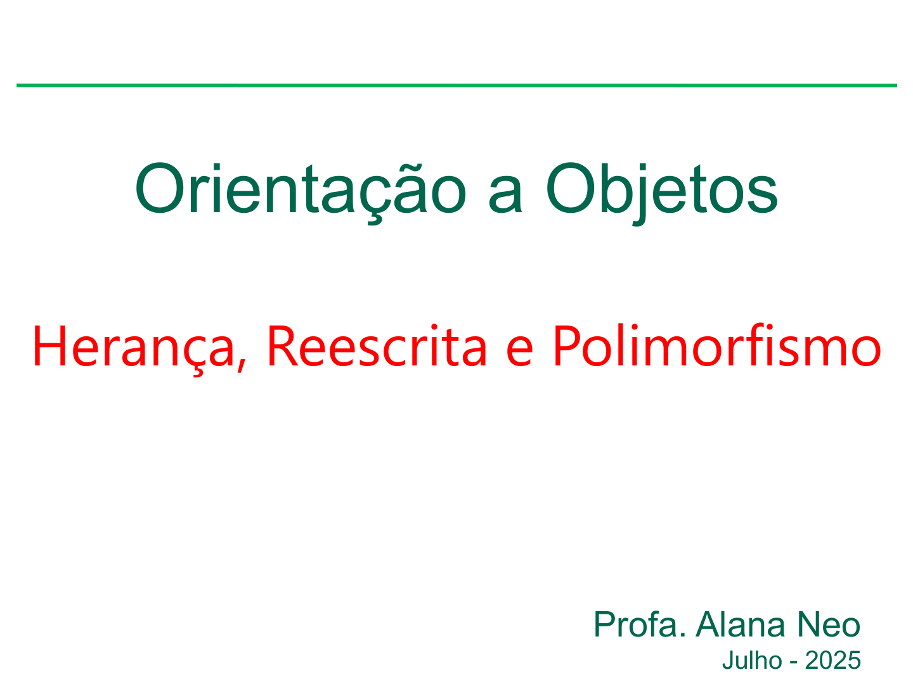
Orientação a Objetos
Herança, Reescrita e Polimorfismo
Profa. Alana Neo
Julho - 2025Página 2
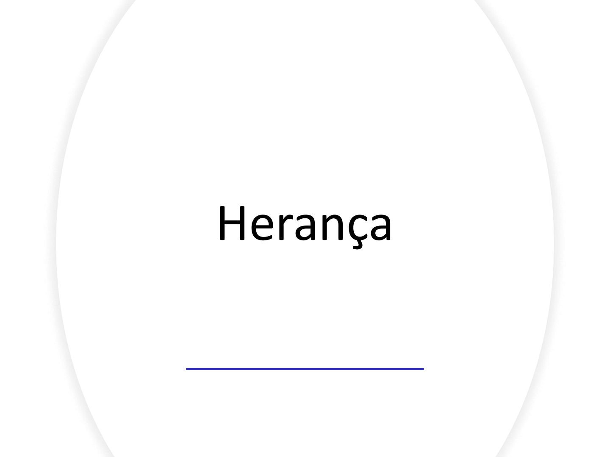
Herança
Página 3
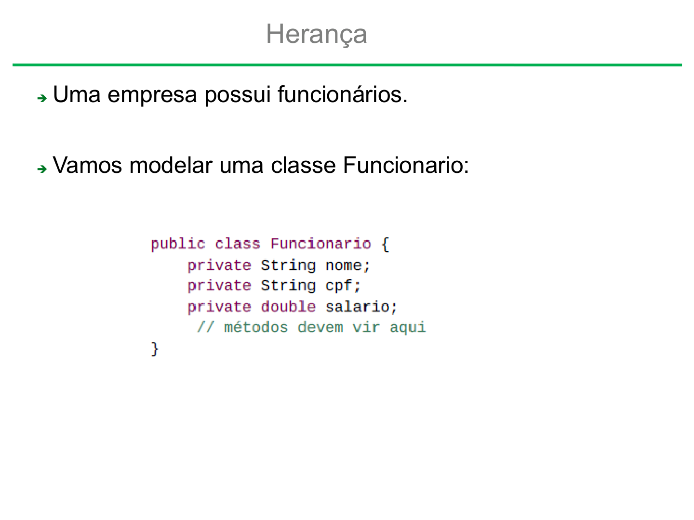
Herança
Uma empresa possui funcionários.
Vamos modelar uma classe Funcionario:
Página 4
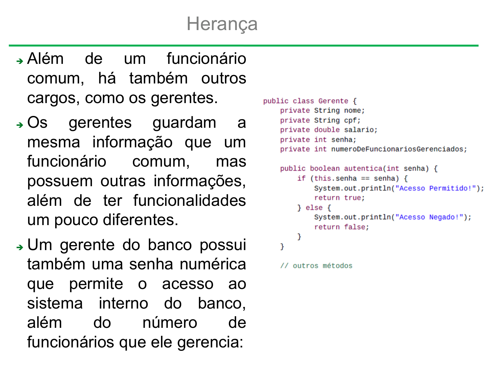
Herança
- Além de um funcionário comum, há também outros cargos, como os gerentes.
- Os gerentes guardam a mesma informação que um funcionário comum, mas possuem outras informações, além de ter funcionalidades um pouco diferentes.
- Um gerente do banco possui também uma senha numérica que permite o acesso ao sistema interno do banco, além do número de funcionários que ele gerencia:
Página 5
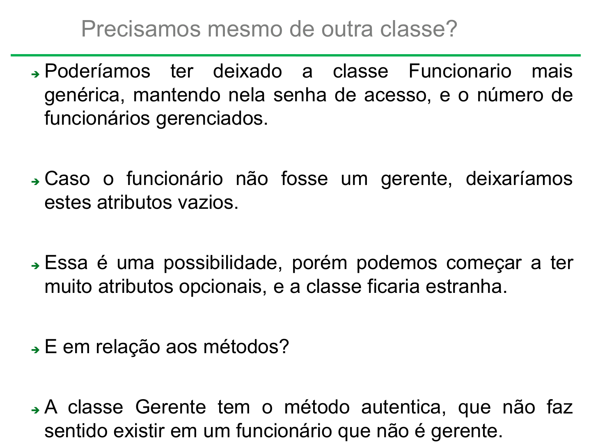
Precisamos mesmo de outra classe?
Poderíamos ter deixado a classe Funcionario mais genérica, mantendo nela senha de acesso, e o número de funcionários gerenciados.
Caso o funcionário não fosse um gerente, deixaríamos estes atributos vazios.
Essa é uma possibilidade, porém podemos começar a ter muito atributos opcionais, e a classe ficaria estranha.
E em relação aos métodos?
A classe Gerente tem o método autentica, que não faz sentido existir em um funcionário que não é gerente.
Página 6
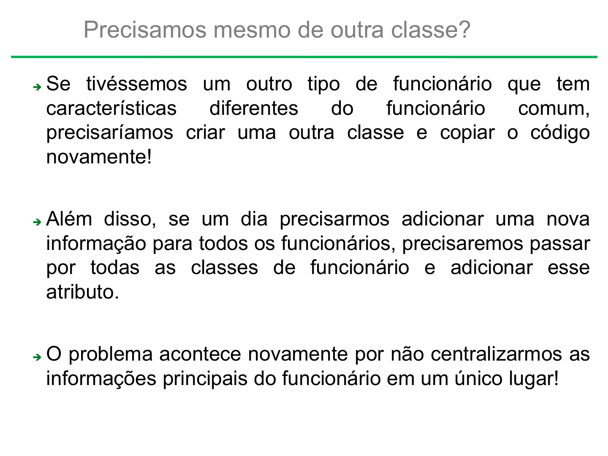
Precisamos mesmo de outra classe?
Se tivéssemos um outro tipo de funcionário que tem características diferentes do funcionário comum, precisaríamos criar uma outra classe e copiar o código novamente!
Além disso, se um dia precisarmos adicionar uma nova informação para todos os funcionários, precisaremos passar por todas as classes de funcionário e adicionar esse atributo.
O problema acontece novamente por não centralizarmos as informações principais do funcionário em um único lugar!
Página 7
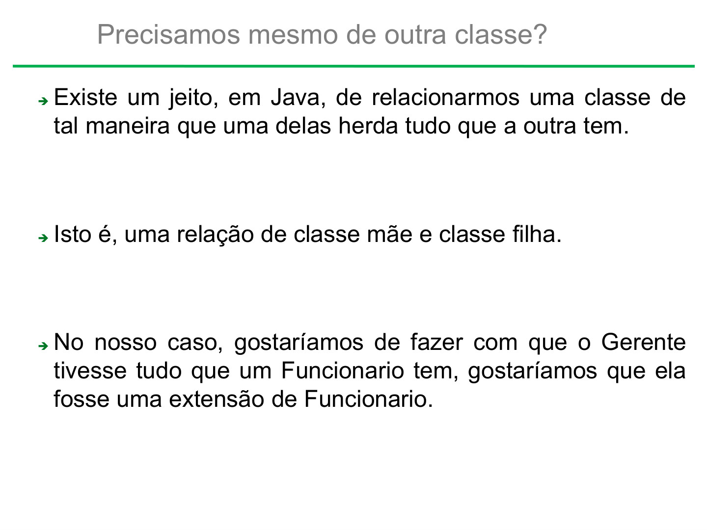
Precisamos mesmo de outra classe?
Existe um jeito, em Java, de relacionarmos uma classe de tal maneira que uma delas herda tudo que a outra tem.
Isto é, uma relação de classe mãe e classe filha.
No nosso caso, gostaríamos de fazer com que o Gerente tivesse tudo que um Funcionario tem, gostaríamos que ela fosse uma extensão de Funcionario.
Página 8
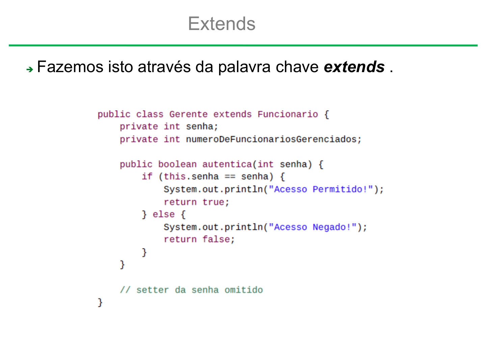
Extends
- Fazemos isto através da palavra chave extends .
Página 9
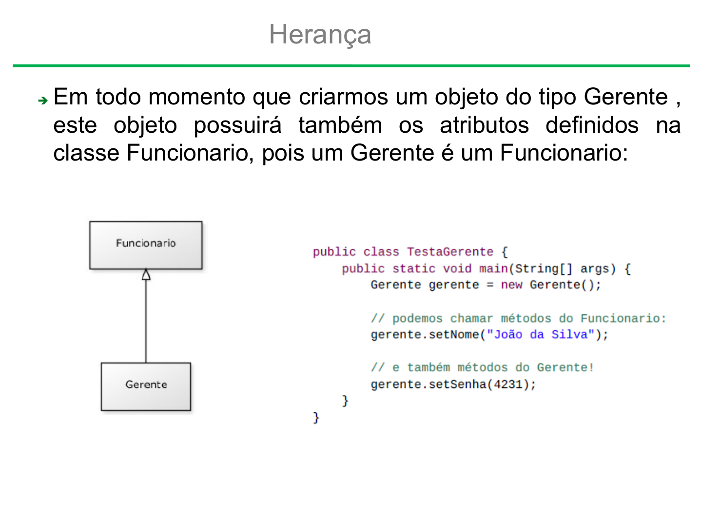
Herança
- Em todo momento que criarmos um objeto do tipo Gerente , este objeto possuirá também os atributos definidos na classe Funcionario, pois um Gerente é um Funcionario:
Página 10
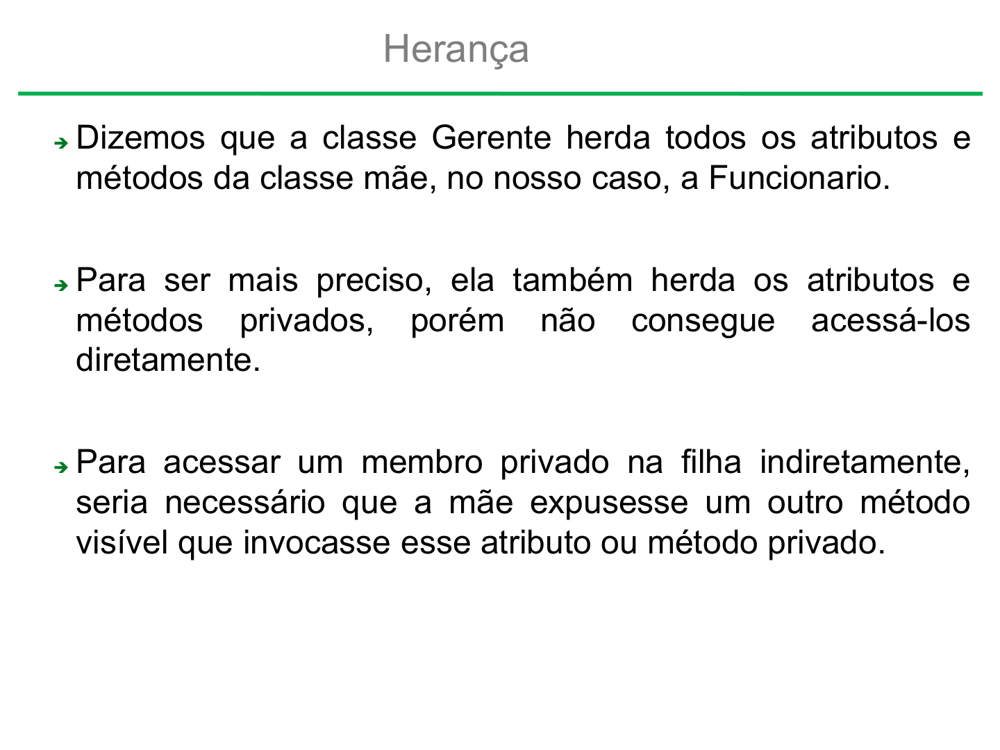
Herança
Dizemos que a classe Gerente herda todos os atributos e métodos da classe mãe, no nosso caso, a Funcionario.
Para ser mais preciso, ela também herda os atributos e métodos privados, porém não consegue acessá-los diretamente.
Para acessar um membro privado na filha indiretamente, seria necessário que a mãe expusesse um outro método visível que invocasse esse atributo ou método privado.
Página 11
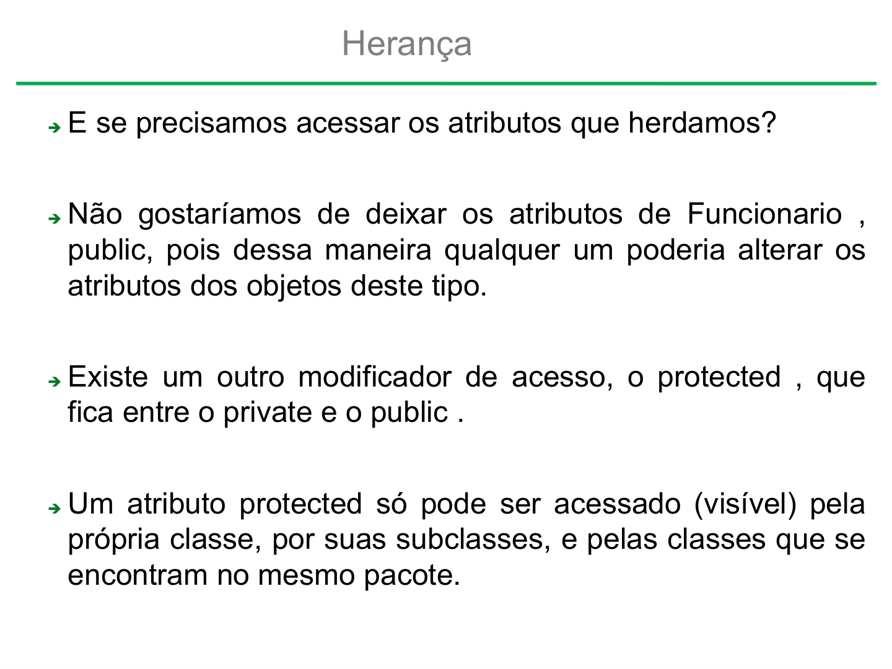
Herança
E se precisamos acessar os atributos que herdamos?
Não gostaríamos de deixar os atributos de Funcionario , public, pois dessa maneira qualquer um poderia alterar os atributos dos objetos deste tipo.
Existe um outro modificador de acesso, o protected , que fica entre o private e o public .
Um atributo protected só pode ser acessado (visível) pela própria classe, por suas subclasses, e pelas classes que se encontram no mesmo pacote.
Página 12
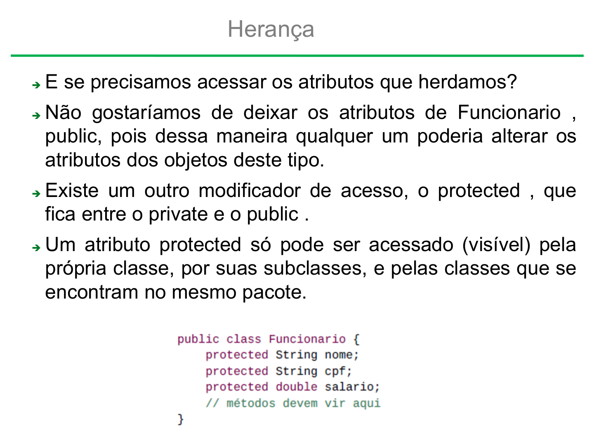
Herança
- E se precisamos acessar os atributos que herdamos?
- Não gostaríamos de deixar os atributos de Funcionario , public, pois dessa maneira qualquer um poderia alterar os atributos dos objetos deste tipo.
- Existe um outro modificador de acesso, o protected , que fica entre o private e o public .
- Um atributo protected só pode ser acessado (visível) pela própria classe, por suas subclasses, e pelas classes que se encontram no mesmo pacote.
Página 13

Herança
- E se precisamos acessar os atributos que herdamos?
- Não gostaríamos de deixar os atributos de Funcionario , public, pois dessa maneira qualquer um poderia alterar os atributos dos objetos deste tipo.
- Existe um outro modificador de acesso, o protected , que fica entre o private e o public .
- Um atributo protected só pode ser acessado (visível) pela própria classe, por suas subclasses, e pelas classes que se encontram no mesmo pacote.
Página 14
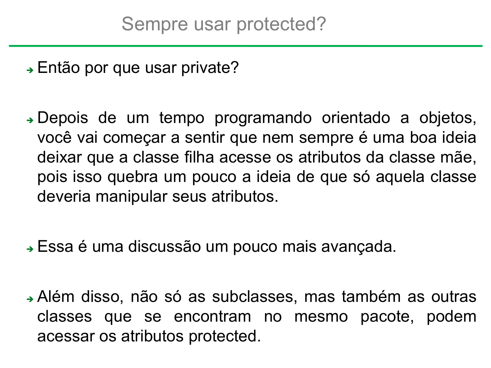
Sempre usar protected?
Então por que usar private?
Depois de um tempo programando orientado a objetos, você vai começar a sentir que nem sempre é uma boa ideia deixar que a classe filha acesse os atributos da classe mãe, pois isso quebra um pouco a ideia de que só aquela classe deveria manipular seus atributos.
Essa é uma discussão um pouco mais avançada.
Além disso, não só as subclasses, mas também as outras classes que se encontram no mesmo pacote, podem acessar os atributos protected.
Página 15
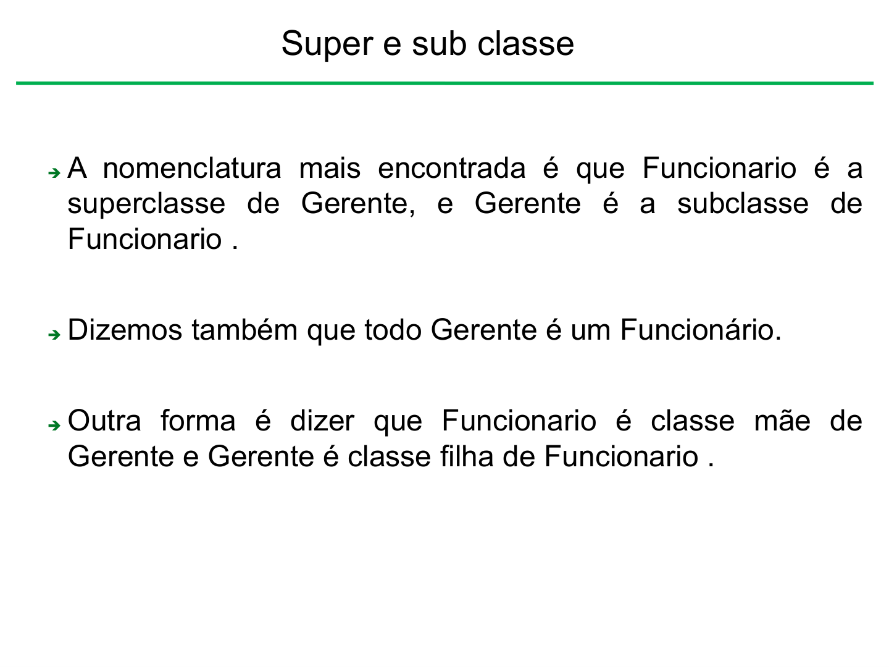
Super e sub classe
A nomenclatura mais encontrada é que Funcionario é a superclasse de Gerente, e Gerente é a subclasse de Funcionario .
Dizemos também que todo Gerente é um Funcionário.
Outra forma é dizer que Funcionario é classe mãe de Gerente e Gerente é classe filha de Funcionario .
Página 16
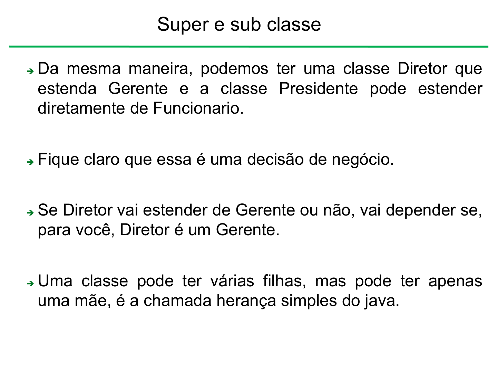
Super e sub classe
Da mesma maneira, podemos ter uma classe Diretor que estenda Gerente e a classe Presidente pode estender diretamente de Funcionario.
Fique claro que essa é uma decisão de negócio.
Se Diretor vai estender de Gerente ou não, vai depender se, para você, Diretor é um Gerente.
Uma classe pode ter várias filhas, mas pode ter apenas uma mãe, é a chamada herança simples do java.
Página 17
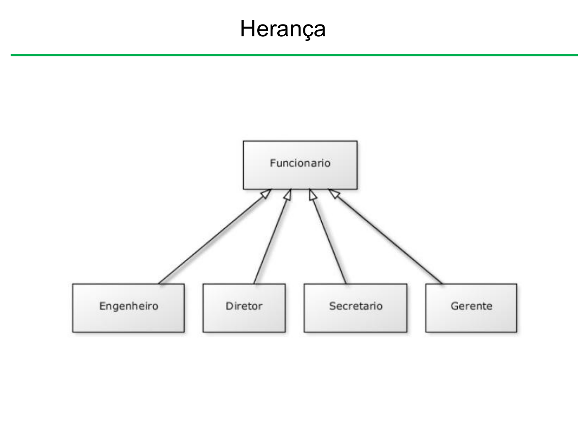
Herança
Página 18
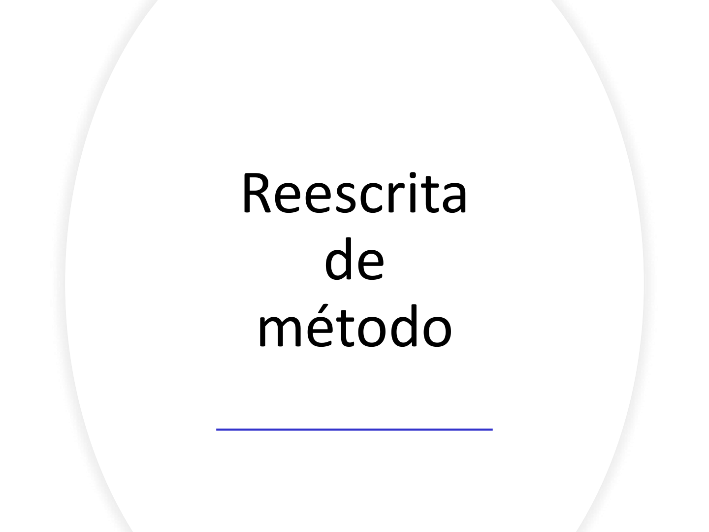
Reescrita de método
Página 19
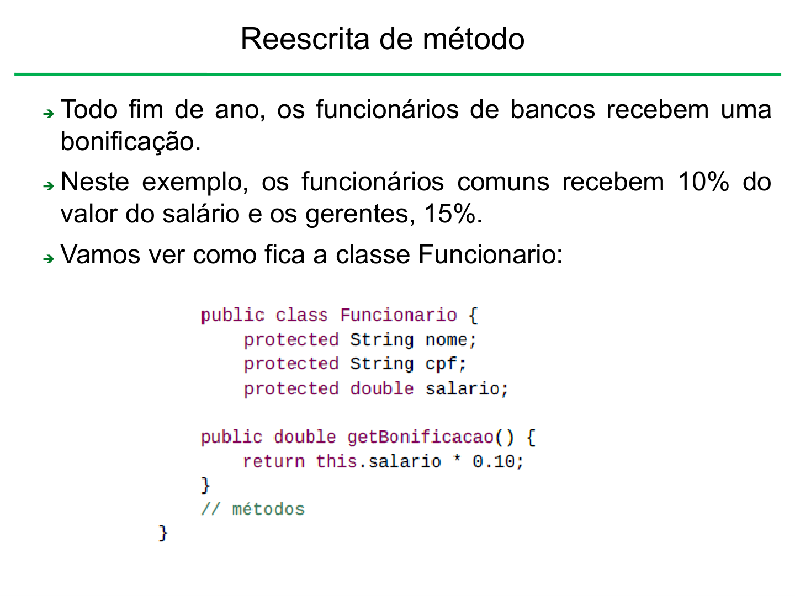
Reescrita de método
- Todo fim de ano, os funcionários de bancos recebem uma bonificação.
- Neste exemplo, os funcionários comuns recebem 10% do valor do salário e os gerentes, 15%.
- Vamos ver como fica a classe Funcionario:
Página 20
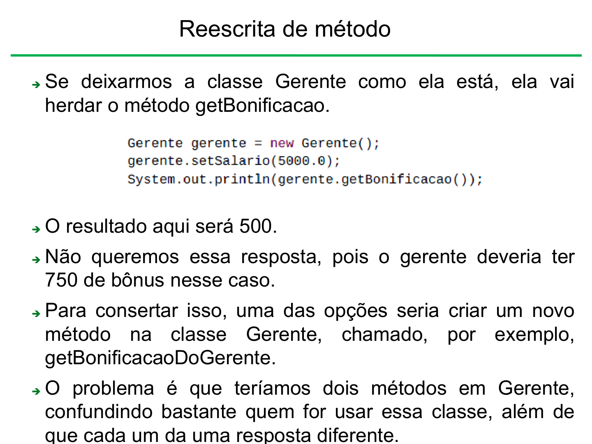
Reescrita de método
Se deixarmos a classe Gerente como ela está, ela vai herdar o método getBonificacao.
O resultado aqui será 500.
Não queremos essa resposta, pois o gerente deveria ter 750 de bônus nesse caso.
Para consertar isso, uma das opções seria criar um novo método na classe Gerente, chamado, por exemplo, getBonificacaoDoGerente.
O problema é que teríamos dois métodos em Gerente, confundindo bastante quem for usar essa classe, além de que cada um da uma resposta diferente.
Página 21
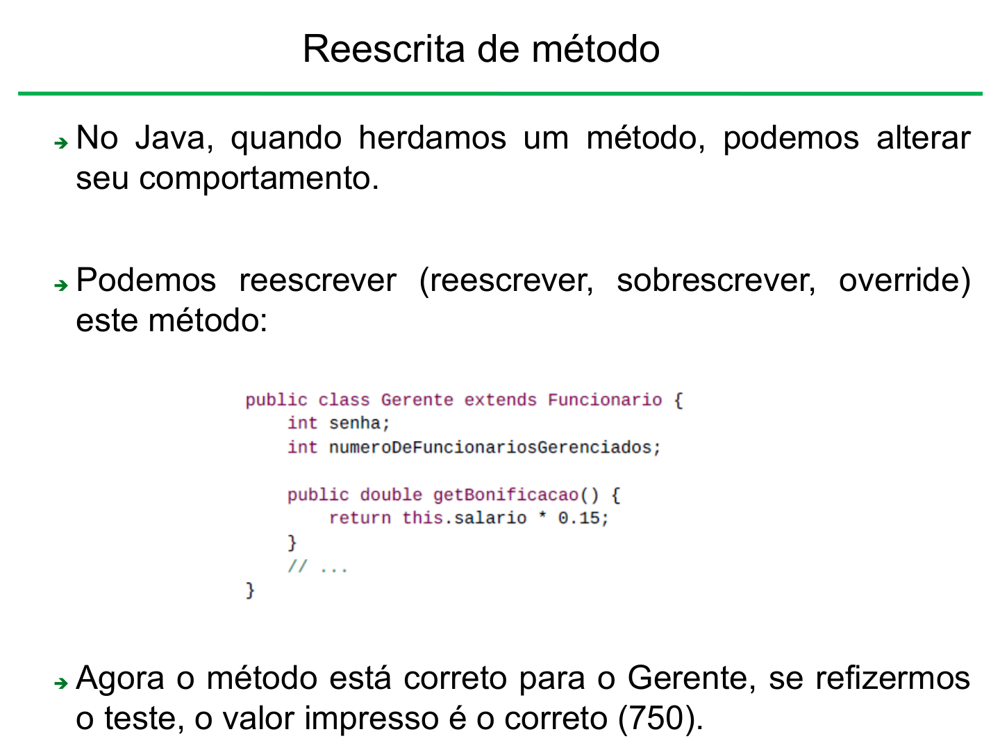
Reescrita de método
No Java, quando herdamos um método, podemos alterar seu comportamento.
Podemos reescrever (reescrever, sobrescrever, override) este método:
Agora o método está correto para o Gerente, se refizermos o teste, o valor impresso é o correto (750).
Página 22
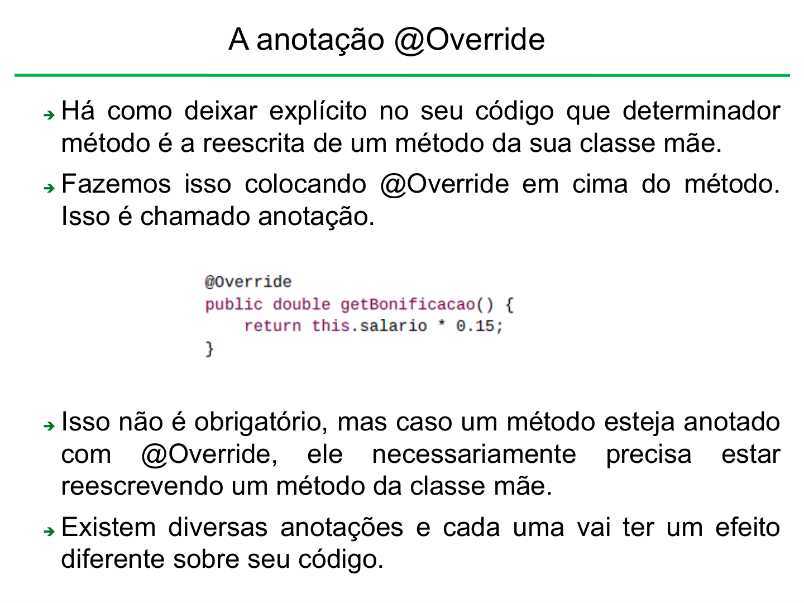
A anotação @Override
Há como deixar explícito no seu código que determinador método é a reescrita de um método da sua classe mãe.
Fazemos isso colocando @Override em cima do método. Isso é chamado anotação.
Isso não é obrigatório, mas caso um método esteja anotado com @Override, ele necessariamente precisa estar reescrevendo um método da classe mãe.
Existem diversas anotações e cada uma vai ter um efeito diferente sobre seu código.
Página 23
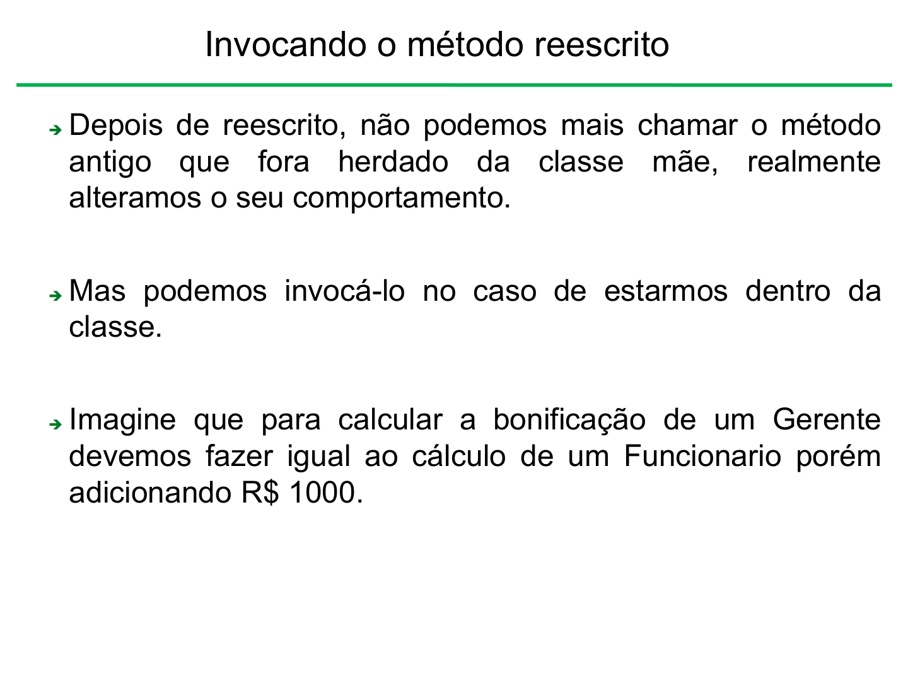
Invocando o método reescrito
Depois de reescrito, não podemos mais chamar o método antigo que fora herdado da classe mãe, realmente alteramos o seu comportamento.
Mas podemos invocá-lo no caso de estarmos dentro da classe.
Imagine que para calcular a bonificação de um Gerente devemos fazer igual ao cálculo de um Funcionario porém adicionando R$ 1000.
Página 24
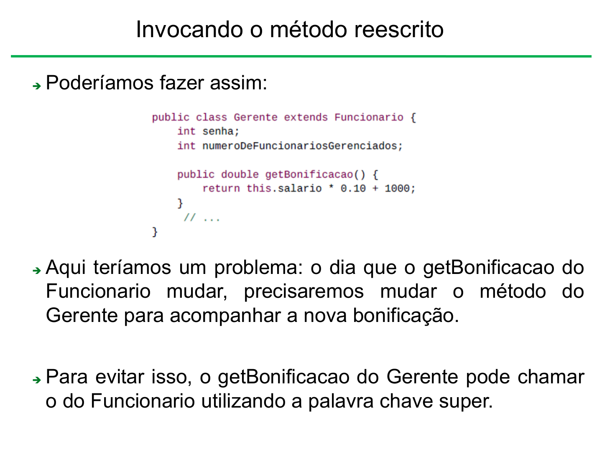
Invocando o método reescrito
Poderíamos fazer assim:
Aqui teríamos um problema: o dia que o getBonificacao do Funcionario mudar, precisaremos mudar o método do Gerente para acompanhar a nova bonificação.
Para evitar isso, o getBonificacao do Gerente pode chamar o do Funcionario utilizando a palavra chave super.
Página 25
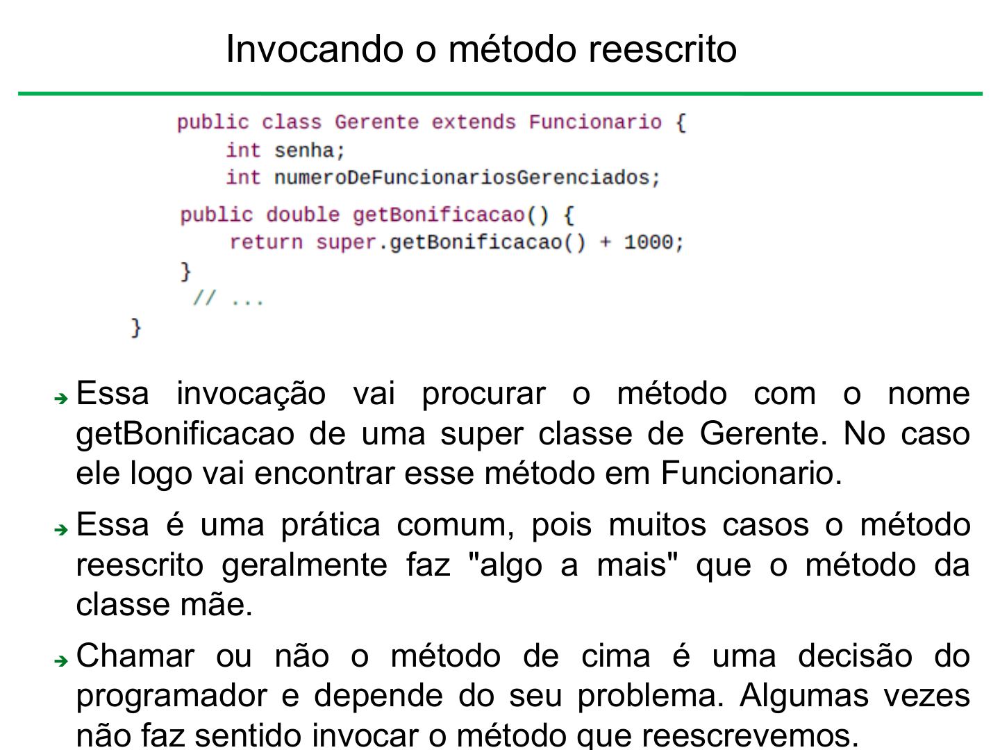
Invocando o método reescrito
- Essa invocação vai procurar o método com o nome getBonificacao de uma super classe de Gerente. No caso ele logo vai encontrar esse método em Funcionario.
- Essa é uma prática comum, pois muitos casos o método reescrito geralmente faz “algo a mais” que o método da classe mãe.
- Chamar ou não o método de cima é uma decisão do programador e depende do seu problema. Algumas vezes não faz sentido invocar o método que reescrevemos.
Página 26
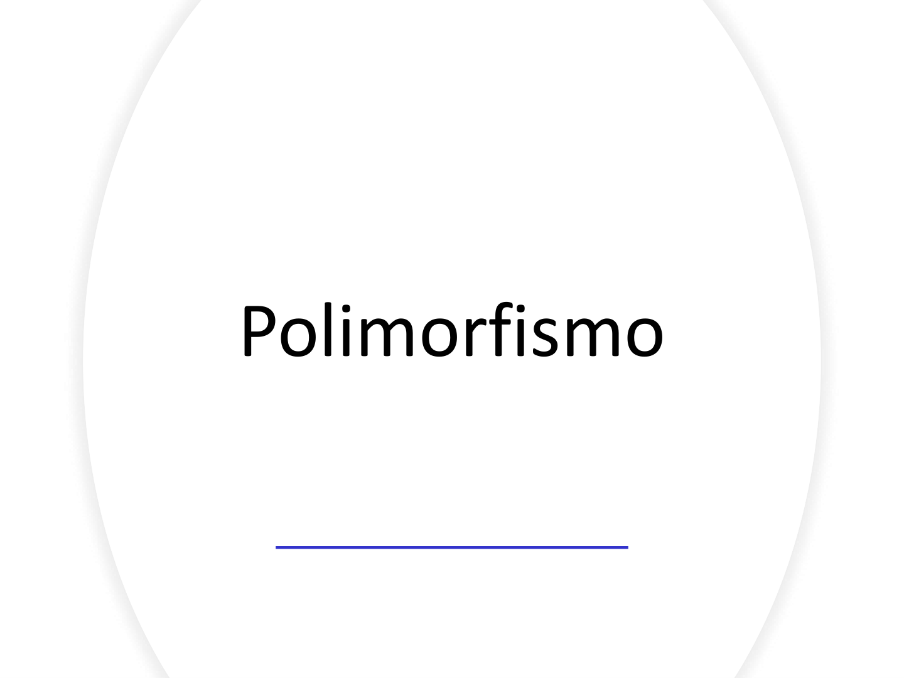
Polimorfismo
Página 27
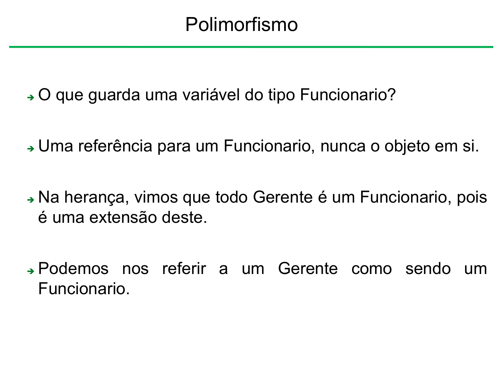
Polimorfismo
O que guarda uma variável do tipo Funcionario?
Uma referência para um Funcionario, nunca o objeto em si.
Na herança, vimos que todo Gerente é um Funcionario, pois é uma extensão deste.
Podemos nos referir a um Gerente como sendo um Funcionario.
Página 28
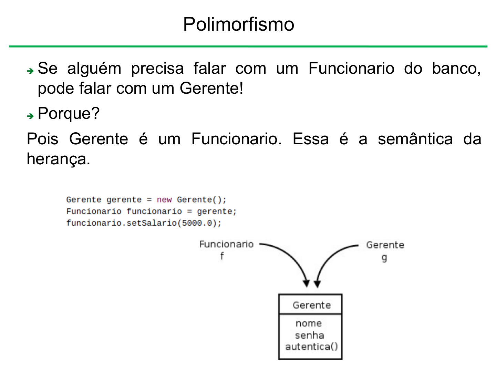
Polimorfismo
- Se alguém precisa falar com um Funcionario do banco, pode falar com um Gerente!
- Porque? Pois Gerente é um Funcionario. Essa é a semântica da herança.
Página 29
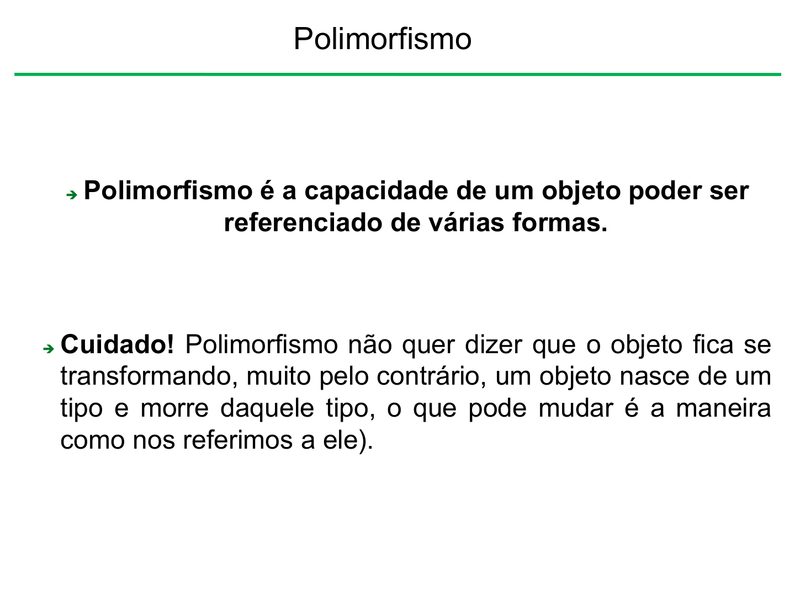
Polimorfismo
Polimorfismo é a capacidade de um objeto poder ser referenciado de várias formas.
Cuidado! Polimorfismo não quer dizer que o objeto fica se transformando, muito pelo contrário, um objeto nasce de um tipo e morre daquele tipo, o que pode mudar é a maneira como nos referimos a ele).
Página 30
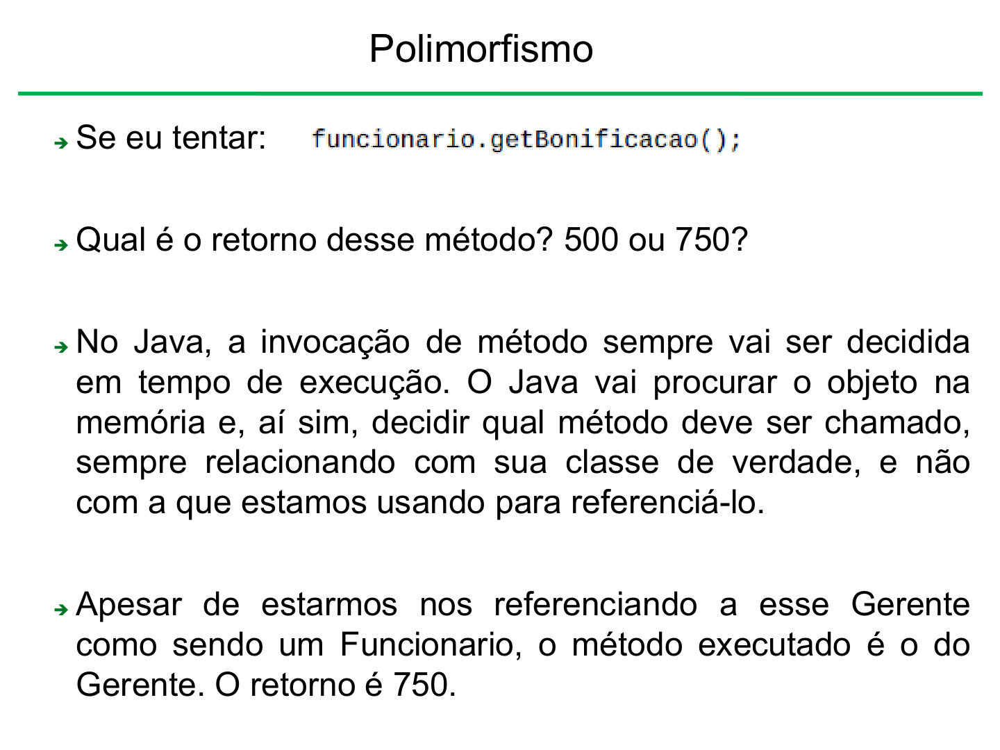
Polimorfismo
Se eu tentar:
Qual é o retorno desse método? 500 ou 750?
No Java, a invocação de método sempre vai ser decidida em tempo de execução. O Java vai procurar o objeto na memória e, aí sim, decidir qual método deve ser chamado, sempre relacionando com sua classe de verdade, e não com a que estamos usando para referenciá-lo.
Apesar de estarmos nos referenciando a esse Gerente como sendo um Funcionario, o método executado é o do Gerente. O retorno é 750.
Página 31
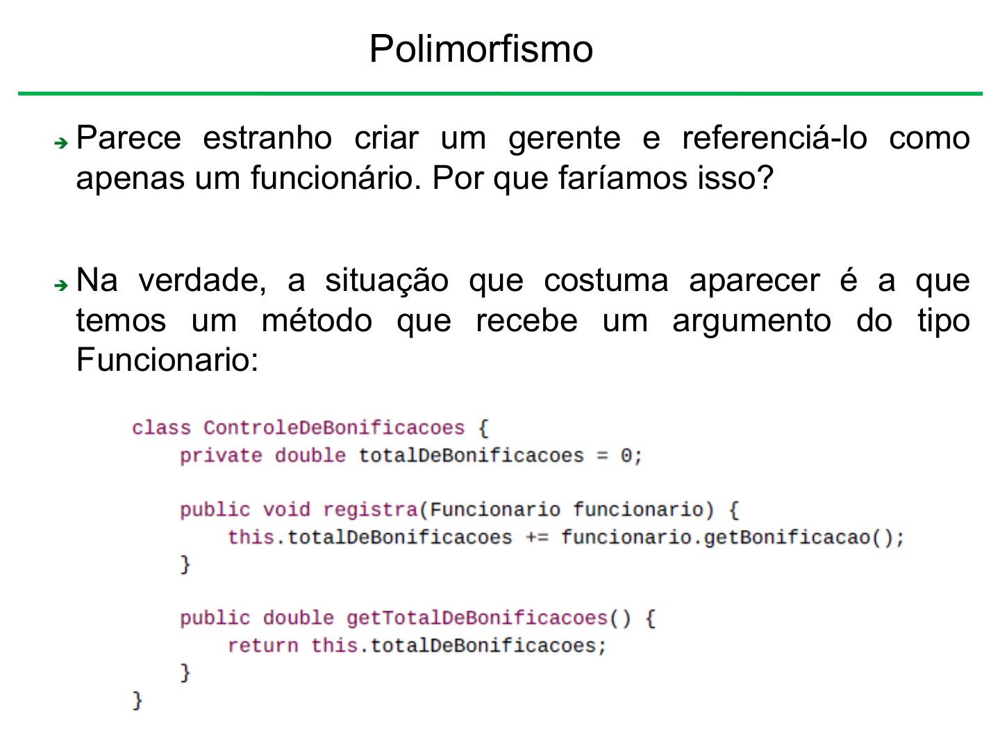
Polimorfismo
Parece estranho criar um gerente e referenciá-lo como apenas um funcionário. Por que faríamos isso?
Na verdade, a situação que costuma aparecer é a que temos um método que recebe um argumento do tipo Funcionario:
Página 32
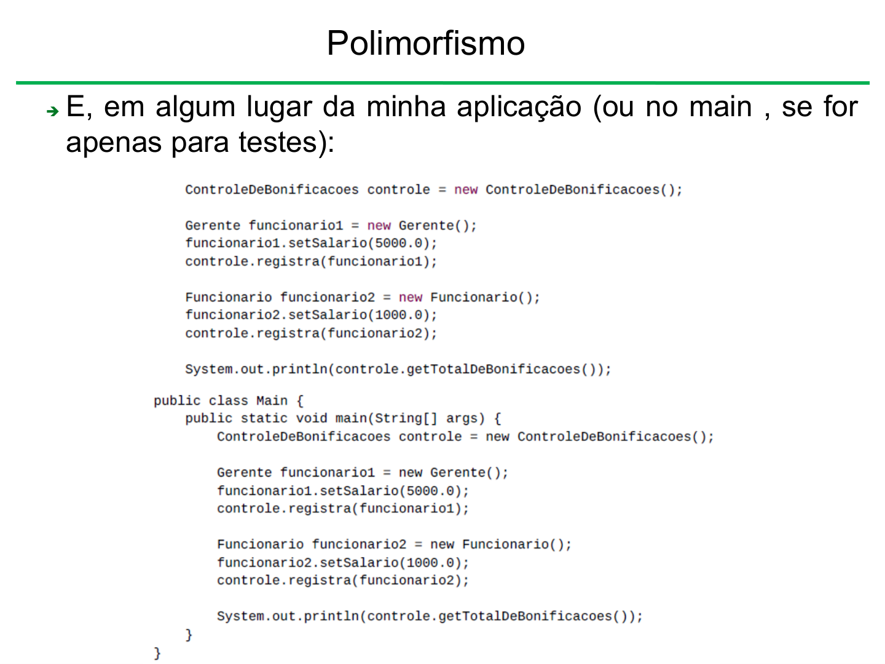
Polimorfismo
- E, em algum lugar da minha aplicação (ou no main , se for apenas para testes):
Página 33
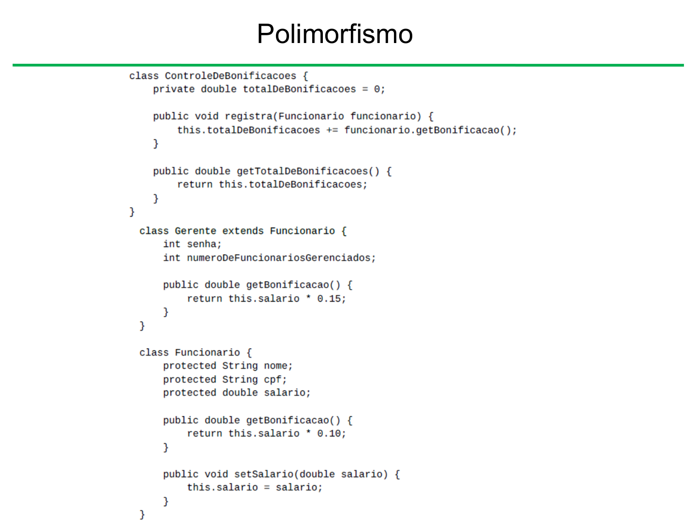
Polimorfismo
Página 34
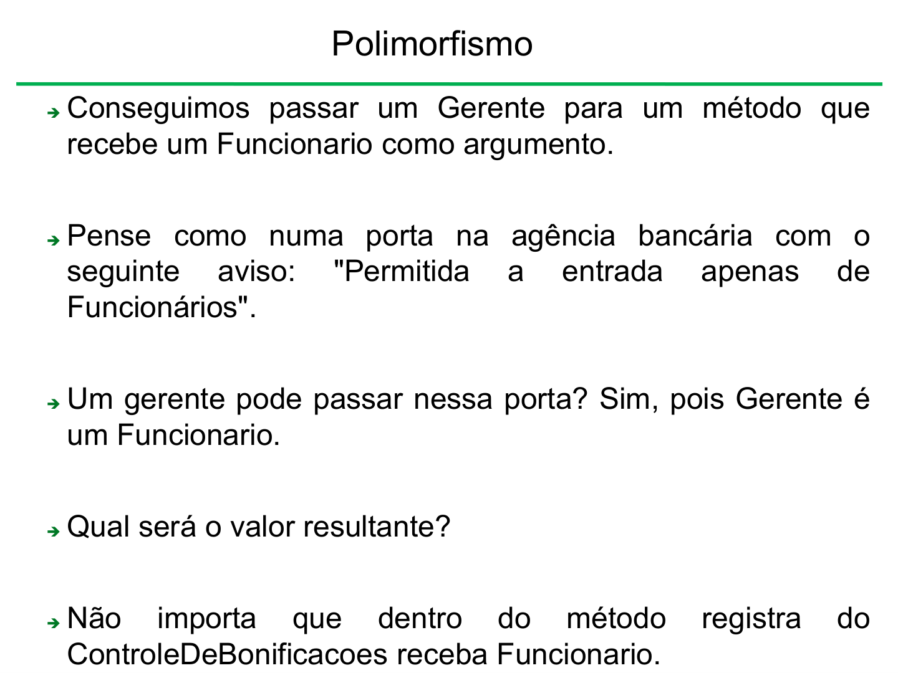
Polimorfismo
Conseguimos passar um Gerente para um método que recebe um Funcionario como argumento.
Pense como numa porta na agência bancária com o seguinte aviso: “Permitida a entrada apenas de Funcionários”.
Um gerente pode passar nessa porta? Sim, pois Gerente é um Funcionario.
Qual será o valor resultante?
Não importa que dentro do método registra do ControleDeBonificacoes receba Funcionario.
Página 35
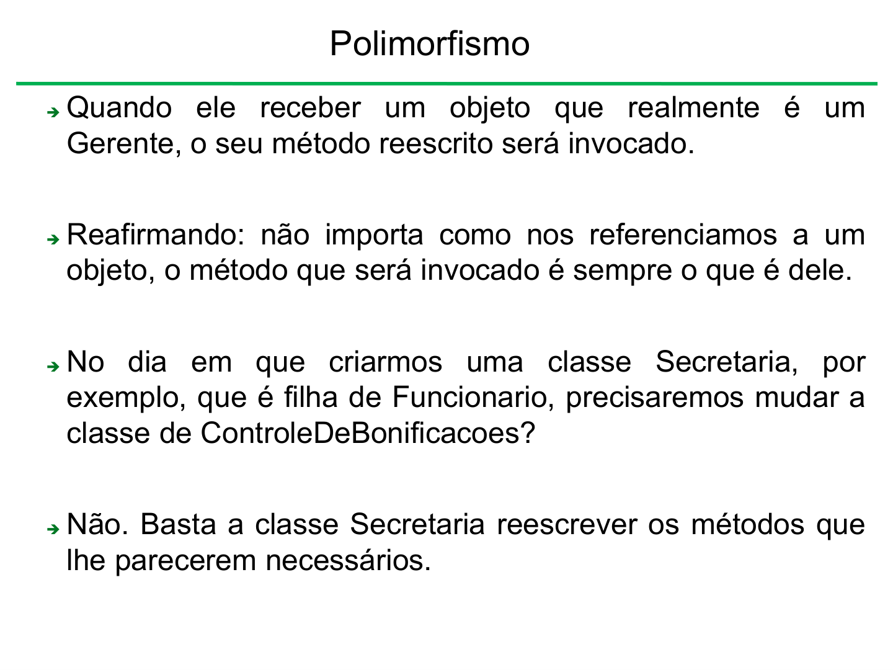
Polimorfismo
Quando ele receber um objeto que realmente é um Gerente, o seu método reescrito será invocado.
Reafirmando: não importa como nos referenciamos a um objeto, o método que será invocado é sempre o que é dele.
No dia em que criarmos uma classe Secretaria, por exemplo, que é filha de Funcionario, precisaremos mudar a classe de ControleDeBonificacoes?
Não. Basta a classe Secretaria reescrever os métodos que lhe parecerem necessários.
Página 36
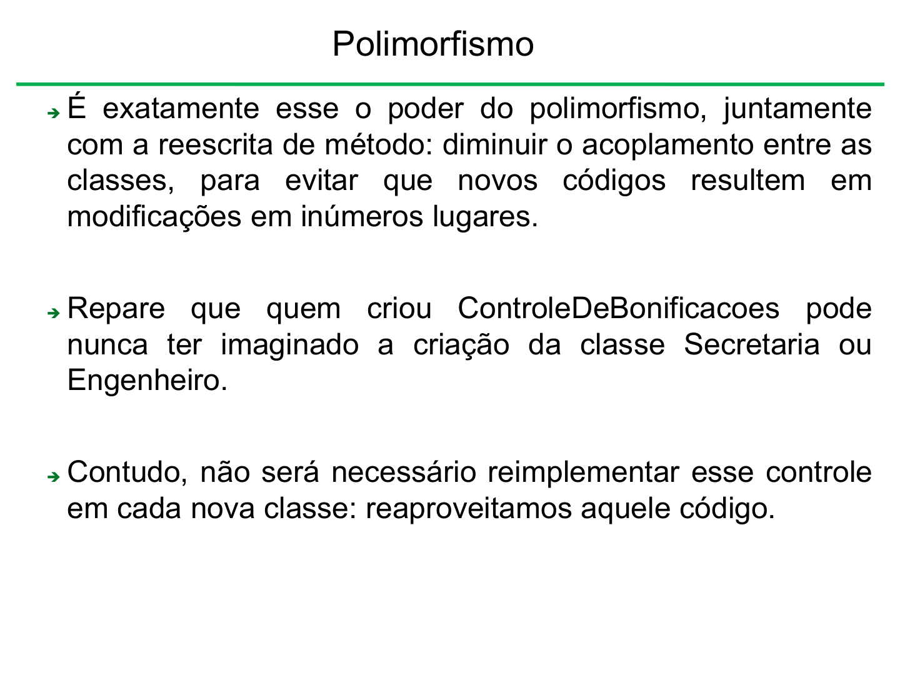
Polimorfismo
É exatamente esse o poder do polimorfismo, juntamente com a reescrita de método: diminuir o acoplamento entre as classes, para evitar que novos códigos resultem em modificações em inúmeros lugares.
Repare que quem criou ControleDeBonificacoes pode nunca ter imaginado a criação da classe Secretaria ou Engenheiro.
Contudo, não será necessário reimplementar esse controle em cada nova classe: reaproveitamos aquele código.
Página 37
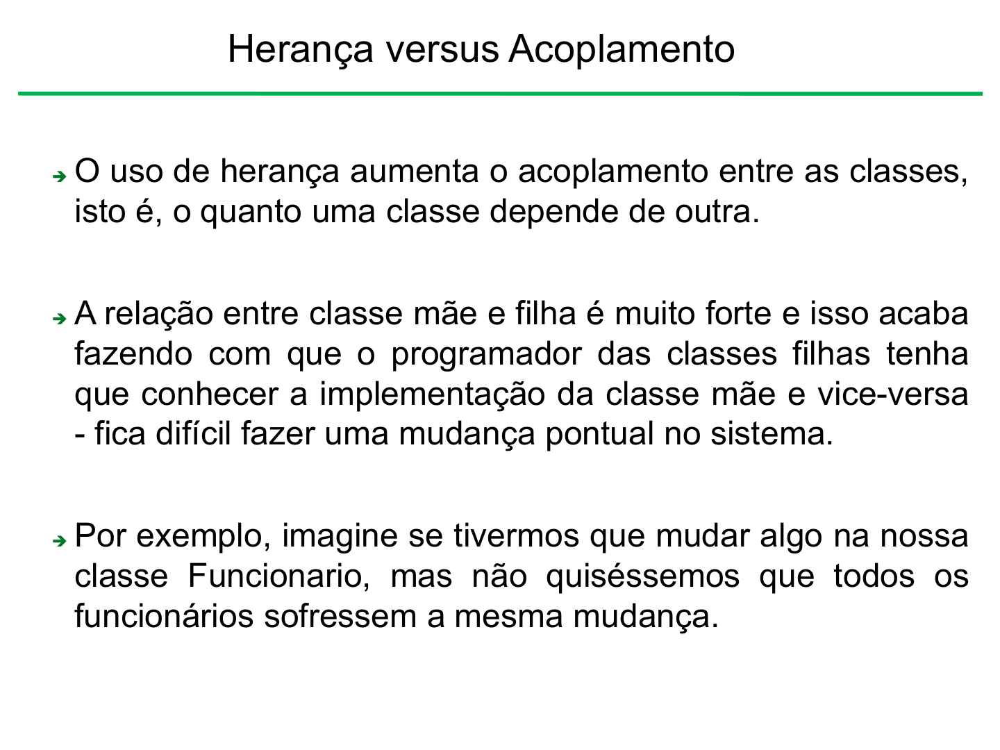
Herança versus Acoplamento
O uso de herança aumenta o acoplamento entre as classes, isto é, o quanto uma classe depende de outra.
A relação entre classe mãe e filha é muito forte e isso acaba fazendo com que o programador das classes filhas tenha que conhecer a implementação da classe mãe e vice-versa
- fica difícil fazer uma mudança pontual no sistema.
Por exemplo, imagine se tivermos que mudar algo na nossa classe Funcionario, mas não quiséssemos que todos os funcionários sofressem a mesma mudança.
Página 38
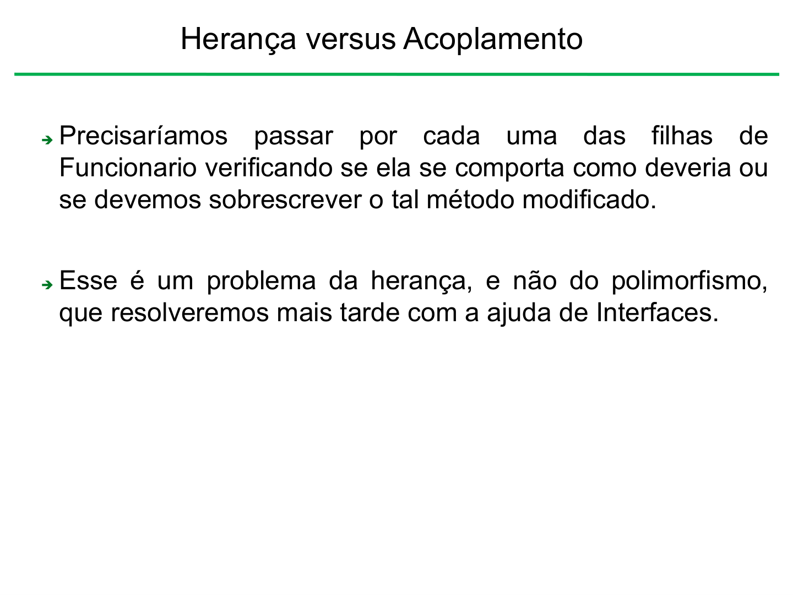
Herança versus Acoplamento
Precisaríamos passar por cada uma das filhas de Funcionario verificando se ela se comporta como deveria ou se devemos sobrescrever o tal método modificado.
Esse é um problema da herança, e não do polimorfismo, que resolveremos mais tarde com a ajuda de Interfaces.
Página 39
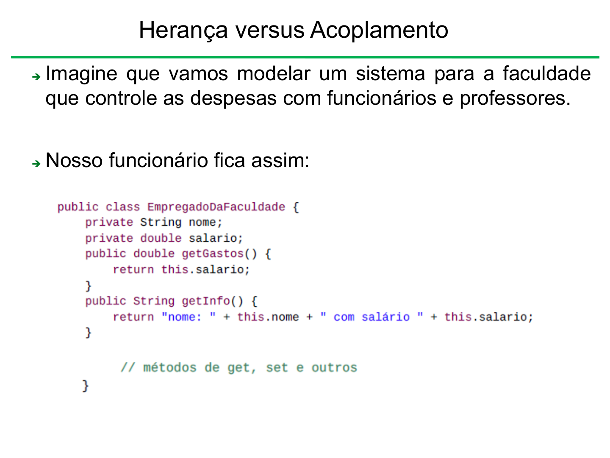
Herança versus Acoplamento
Imagine que vamos modelar um sistema para a faculdade que controle as despesas com funcionários e professores.
Nosso funcionário fica assim:
Página 40
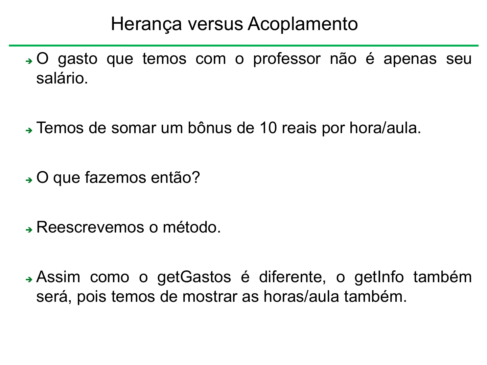
Herança versus Acoplamento
O gasto que temos com o professor não é apenas seu salário.
Temos de somar um bônus de 10 reais por hora/aula.
O que fazemos então?
Reescrevemos o método.
Assim como o getGastos é diferente, o getInfo também será, pois temos de mostrar as horas/aula também.
Página 41
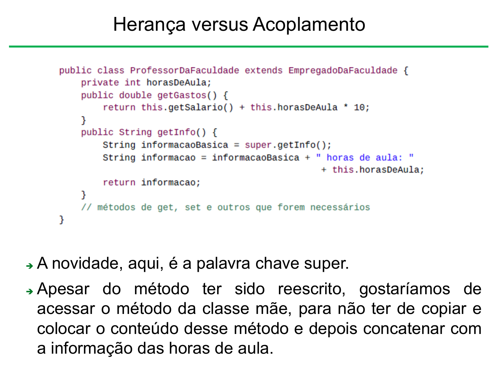
Herança versus Acoplamento
- A novidade, aqui, é a palavra chave super.
- Apesar do método ter sido reescrito, gostaríamos de acessar o método da classe mãe, para não ter de copiar e colocar o conteúdo desse método e depois concatenar com a informação das horas de aula.
Página 42
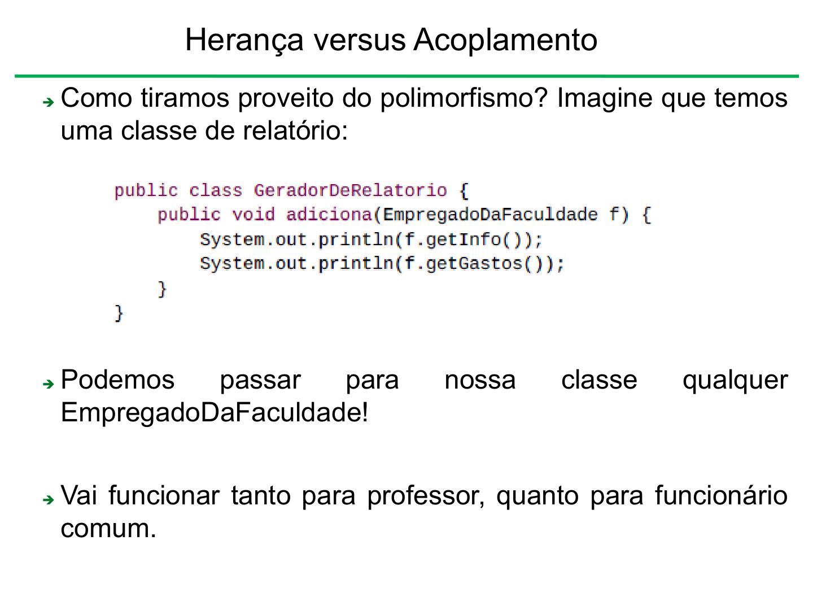
Herança versus Acoplamento
Como tiramos proveito do polimorfismo? Imagine que temos uma classe de relatório:
Podemos passar para nossa classe qualquer EmpregadoDaFaculdade!
Vai funcionar tanto para professor, quanto para funcionário comum.
Página 43
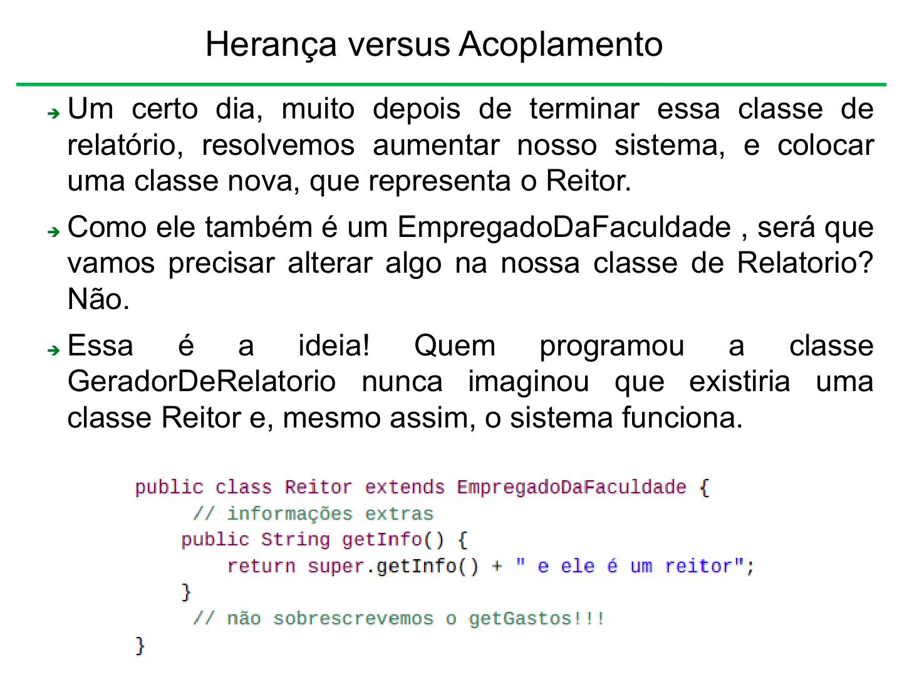
Herança versus Acoplamento
- Um certo dia, muito depois de terminar essa classe de relatório, resolvemos aumentar nosso sistema, e colocar uma classe nova, que representa o Reitor.
- Como ele também é um EmpregadoDaFaculdade , será que vamos precisar alterar algo na nossa classe de Relatorio? Não.
- Essa é a ideia! Quem programou a classe GeradorDeRelatorio nunca imaginou que existiria uma classe Reitor e, mesmo assim, o sistema funciona.
Página 44
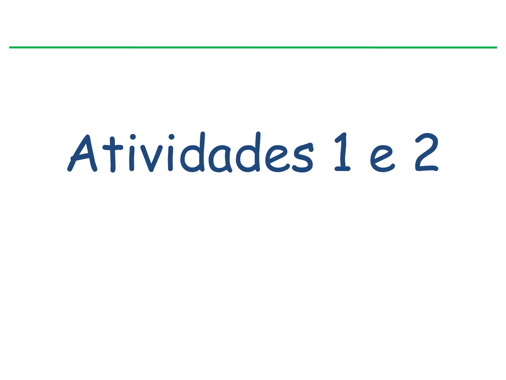
Atividades 1 e 2
Página 45
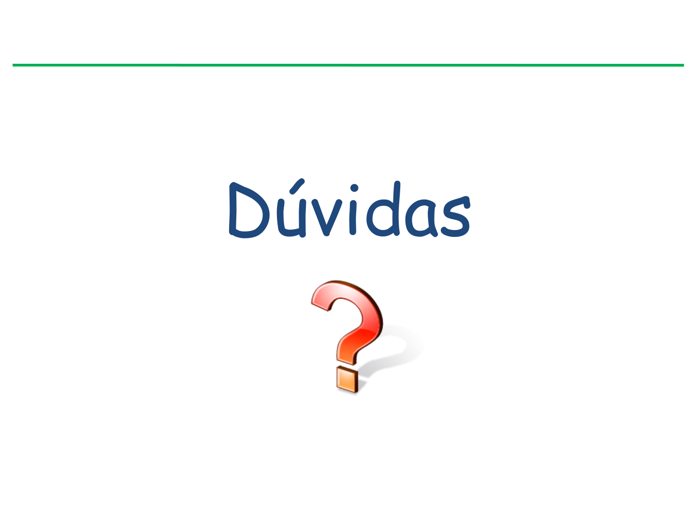
Dúvidas